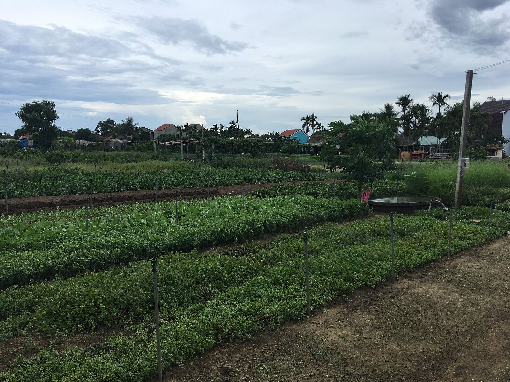
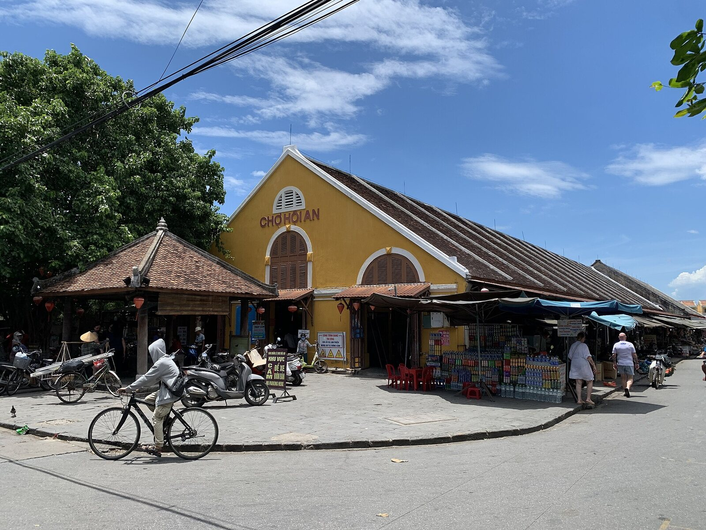

Tiếng Việt
Tiếng Việt English
English 한국어
한국어 中文
中文 Русский
Русский Deutsch
Deutsch
Трёх дней и двух ночей как раз хватает, чтобы Хойан перестал быть просто фотографией для соцсетей и стал впечатлением со своим ритмом: утром велопрогулка вдоль рисовых полей, в полдень сон у бассейна, днём прогулка по Старому городу, а вечером на берегу реки Хоай вы наблюдаете, как зажигаются фонари. Этот маршрут стойка регистрации CGP Luxury Hotel обычно советует гостям, впервые приехавшим в Хойан. Он расписан по времени суток, чтобы вы путешествовали неспешно и ничего важного не пропустили.
Подготовка к поездке
Перед поездкой полезно знать несколько основных вещей, чтобы маршрут прошёл гладко. CGP Luxury Hotel находится по адресу 67 Ly Thuong Kiet, примерно в 1 км от Старого города и примерно в 3 км от пляжа Ан Банг. Это идеальное расстояние: достаточно близко, чтобы дойти пешком или доехать на велосипеде, и достаточно далеко, чтобы ночью спокойно спать вдали от музыки и толп центра.
Адрес67 Ly Thuong Kiet, Хойан
Заезд / выездС 14:00 / до 12:00
До Старого городаОколо 1 км, 5 минут на велосипеде
До пляжа Ан БангОколо 3 км
Из аэропорта ДанангаОколо 45 минут на машине. Отель предлагает трансфер из аэропорта (платно), пожалуйста, бронируйте заранее на стойке регистрации.
Если ваш рейс прибывает утром, сообщите заранее, и сотрудники ресепшен сохранят ваш багаж, а при наличии свободного номера помогут с ранним заселением. Пока ждёте, можно отдохнуть в лобби со стаканом прохладного сока или посидеть в садовом кафе у бассейна. Багаж в безопасности, а вы можете сразу начинать знакомство с городом.
Что взять с собой?Удобную обувь для прогулок, шляпу с широкими полями, солнцезащитный крем, лёгкую куртку на вечер и компактный дождевик, если вы едете с сентября по декабрь. Купальник обязателен: бассейн отеля бесплатен для всех гостей.
День 1: заселение и ночной Старый город

- 14:00
Заселение и знакомство с отелем
После заселения откройте дверь на балкон, заварите чайник чая и позвольте телу отдохнуть после дороги. Номера CGP площадью от 35 до 40 м², во многих есть балконы с видом на Хойан или зелёные поля. Если вы живёте в King Suite Pool Access на первом этаже, достаточно открыть стеклянную дверь, чтобы выйти на деревянную террасу у бассейна.
- 15:30
Купание и перекус в садовом кафе
Послеобеденное солнце в Хойане обычно ещё жаркое, поэтому это лучшее время для бассейна. Затем загляните в кафе под зелёной перголой, закажите арбузный сок или фруктовый чай и попросите на ресепшен карту города. Вам отметят тихие улицы и несколько местных заведений, которые стоит попробовать.
- 17:00
На велосипеде в Старый город на закате
Около пяти вечера солнце смягчается, и жёлтые стены Старого города окрашиваются в медовый цвет. Возьмите в отеле велосипед с плетёной корзиной: около пяти минут, и вы в центре. Оставьте велосипед у старого квартала и прогуляйтесь по улицам Чан Фу, Нгуен Тхай Хок и Бать Данг. Японский крытый мост, Фуцзяньский зал собраний и старинные дома стоит посетить, купив билет в Старый город.
- 19:00
Ужин: као лау и курица с рисом
Первый вечер стоит посвятить двум блюдам, прославившим Хойан. Као лау – упругая золотисто-коричневая лапша с тонко нарезанной свининой чар сиу, зеленью из Чакуэ и хрустящими шкварками. Курица с рисом по-хойански – золотистый рис, сваренный на курином бульоне, с рваной курицей, вьетнамской кинзой и маринованными овощами. Такой ужин сытный и даёт почувствовать, что вы действительно в Хойане.
- 20:30
Пускаем фонарики по реке Хоай
После ужина отправляйтесь к реке Хоай. Оба берега украшены сотнями разноцветных фонарей, вода переливается огнями. Можно совершить короткую прогулку на лодке и отпустить бумажный фонарик с желанием. Если вы приехали в полнолуние по лунному календарю, город особенно праздничный. Когда устанете, несколько минут на велосипеде, и вы снова в отеле на тихой улице.
 Фото: Steffen Schmitz / Wikimedia Commons, CC BY-SA 4.0
Фото: Steffen Schmitz / Wikimedia Commons, CC BY-SA 4.0 Фото: Christophe95 / Wikimedia Commons, CC BY-SA 4.0
Фото: Christophe95 / Wikimedia Commons, CC BY-SA 4.0Транспорт в Старом городеВъезд мотобайков и машин в Старый город ограничен во многие часы, особенно вечером. Удобнее всего ходить пешком или ездить на велосипеде. Держите билет при себе: на некоторых объектах его проверяют на входе.
День 2: деревня, кокосовый лес и море
Второй день – время покинуть Старый город и увидеть другой Хойан: более зелёный, простой и близкий к повседневной жизни местных жителей.
- 07:00
Плавающий завтрак у бассейна
Если вы заказали его накануне, плетёный поднос с выпечкой, фруктами и соком поплывёт прямо по воде бассейна. Многие пары называют это самым красивым воспоминанием поездки. Если хочется чего-то привычного, позавтракайте в ресторане отеля: тосты, яйца, сезонные фрукты, кофе и чай.
- 08:00
Велопрогулка через деревню Чакуэ
От отеля поезжайте в сторону пляжа Ан Банг: мимо рисовых полей вы доберётесь до огородной деревни Чакуэ. Базилик, мяту и вьетнамскую кинзу здесь удобряют водорослями из лагуны, поэтому у зелени особый аромат. Многие семьи приглашают гостей поработать на огороде: вскопать грядку, полить её из традиционных двойных лейок и приготовить простое блюдо из только что сорванной зелени.
- 10:30
Пляж Ан Банг
Чуть дальше – пляж Ан Банг, примерно в 3 км от отеля. Пляж сохранил природный облик: мелкий песок и множество небольших кафе у моря. Возьмите шезлонг под зонтиком, закажите свежий кокос и любуйтесь волнами. В хорошую погоду искупайтесь, пока солнце не поднялось высоко.
- 12:30
Сиеста в отеле
В полдень лучше укрыться от солнца. Вернитесь в отель, освежитесь, закажите на кухне CGP курицу с рисом или багет с яичницей и вздремните. Этот перерыв даст сил на вечер.
- 15:00
Кокосовый лес Бай Мау, Камтхань
Лес водяных кокосовых пальм Бай Мау находится в Камтхане, в 5–6 км от центра Хойана. Прогулка на круглой лодке-корзине среди пальм, трюки лодочников с вращением корзины и рассказы о рыбацкой деревне особенно веселы в компании друзей или семьи. На ресепшен вызовут машину или посоветуют надёжного организатора.
- 18:30
Ночной рынок и морепродукты
Вечером загляните на ночной рынок Нгуен Хоанг на другом берегу, где продают всё: от фонарей и одежды до уличных закусок. Любителям морепродуктов подойдут заведения по дороге к пляжу или в районе Куа Дай. Не пропустите хрустящие блинчики бань сео, рулетики в горчичных листьях и сладкий десерт из кукурузы Кам Нам.


Фото: Christophe95 / Wikimedia Commons, CC BY-SA 4.0 Фото: Mig Gilbert from Brighton / Wikimedia Commons, CC BY-SA 2.0
Фото: Mig Gilbert from Brighton / Wikimedia Commons, CC BY-SA 2.0 Фото: Chester Ho chesterho / Wikimedia Commons, CC0
Фото: Chester Ho chesterho / Wikimedia Commons, CC0День 3: неспешный завтрак и подарки
В последний день спешить не нужно. Выезд до 12:00, так что у вас целое утро.
- 07:30
Кофе на балконе
Заварите вьетнамский кофе через фильтр, откройте балкон и смотрите, как утреннее солнце ложится на поля или черепичные крыши. Многие гости говорят, что именно по этому моменту они скучают больше всего.
- 08:30
Рынок Хойана и портные
Рынок Хойана у реки – хорошее место, чтобы купить чай, кофе, засахаренный имбирь или специи. Если в первый день вы заказали аозай или костюм, сейчас время для последней примерки. Портные в Хойане обычно шьют за 24–48 часов.
- 10:30
Последнее купание и выезд
Вернитесь в отель, искупайтесь напоследок, соберите вещи и выезжайте. Если рейс днём, ресепшен сохранит ваш багаж. Поздний выезд возможен при наличии мест, спросите об этом за день.
- 13:00
В аэропорт
Машина отеля довезёт вас до аэропорта Дананга примерно за 45 минут. Закажите её накануне, особенно в высокий сезон.

Фото: Chainwit. / Wikimedia Commons, CC BY 4.0Хойан прекраснее всего, когда вы никуда не спешите. Не пытайтесь увидеть всё, оставьте несколько причин вернуться.Стойка регистрации CGP Luxury Hotel
Бюджет и передвижение
Стоимость поездки на 3 дня и 2 ночи во многом зависит от ваших привычек в еде и покупках. В таблице перечислены обычные статьи расходов, чтобы вы могли спланировать бюджет.
| Статья | Вариант | Примечание |
|---|---|---|
| Проживание | 2 ночи в CGP Luxury Hotel | Цена зависит от категории номера и сезона, смотрите страницу бронирования |
| Трансфер из аэропорта | Машина отеля | Платно, бронируйте заранее на ресепшен |
| Передвижение по городу | Велосипед, пешком | Велосипед можно взять на ресепшен |
| Билет в Старый город | Покупается в кассах | Цена может меняться из года в год |
| Еда | Местные кафе и рестораны | Уличная еда в Хойане очень доступна |
| Впечатления | Лодка-корзина, фонарики | Уточняйте цену до посадки в лодку |
Если хотите всё включено, посмотрите пакеты проживания отеля. Например, 3-ночный Hoi An Relaxing Stay подойдёт к этому маршруту, если хочется ещё одну ночь, чтобы отдыхать ещё неспешнее.
Небольшие, но важные советы
Избегайте полуденного солнца
С 11:00 до 15:00 солнце самое жаркое. Отдыхайте в отеле и выходите рано утром или ближе к вечеру.
Следите за погодой в сезон дождей
В октябре и ноябре Старый город может на несколько дней уходить под воду. Ресепшен сообщит обстановку и предложит другие планы.
Имейте наличные
Многие маленькие кафе и уличные торговцы принимают только наличные. При бронировании на сайте можно оплатить картой или по QR-коду.
Фотографируйте вежливо
Спрашивайте разрешения, прежде чем фотографировать местных жителей, особенно пожилых людей и торговцев на рынке.
Частые вопросы
Хватит ли 3 дней и 2 ночей, чтобы посмотреть Хойан?
Для первого раза хватит, если сосредоточиться на Старом городе, деревнях и пляже. Если хотите съездить на острова Чам или в святилище Мишон, оставайтесь на 3–4 ночи.
Удобно ли добираться из CGP Luxury Hotel до Старого города?
Очень. Отель примерно в 1 км от Старого города: около 5 минут на велосипеде или 15 минут пешком.
Нужно ли заранее заказывать плавающий завтрак?
Да. Пожалуйста, сообщите на ресепшен минимум за день, чтобы кухня всё подготовила.
Может ли отель забронировать для меня экскурсии?
Ресепшен работает круглосуточно и поможет с экскурсиями, билетами, машинами и другими услугами под ваш маршрут.
Готовы к поездке в Хойан?
Выберите даты и номер, а всё остальное для идеальных 3 дней и 2 ночей подготовит команда CGP Luxury Hotel.